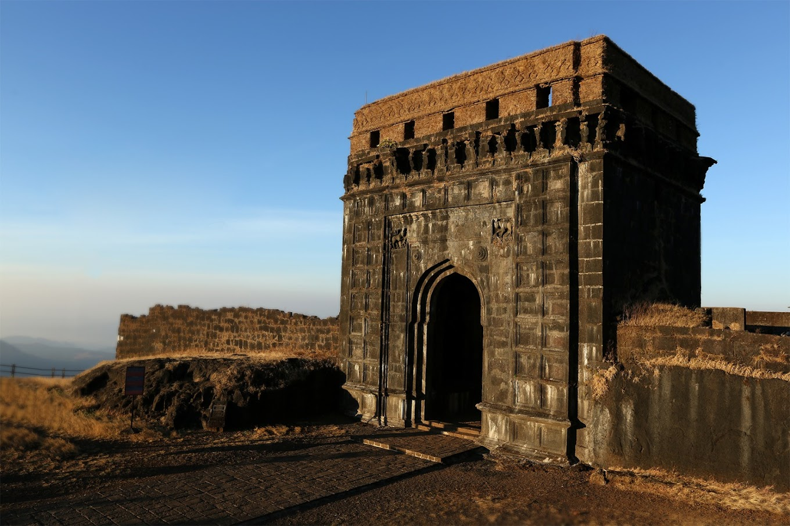
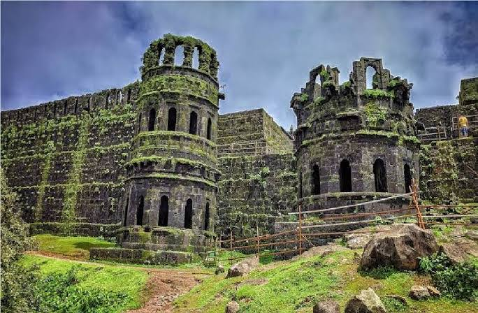
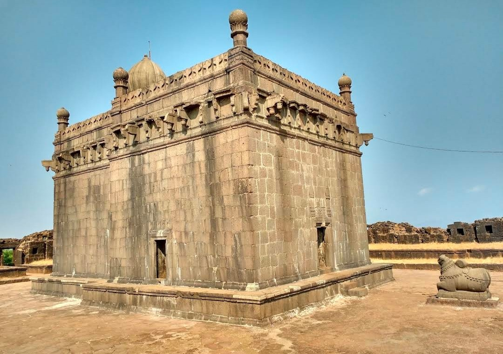
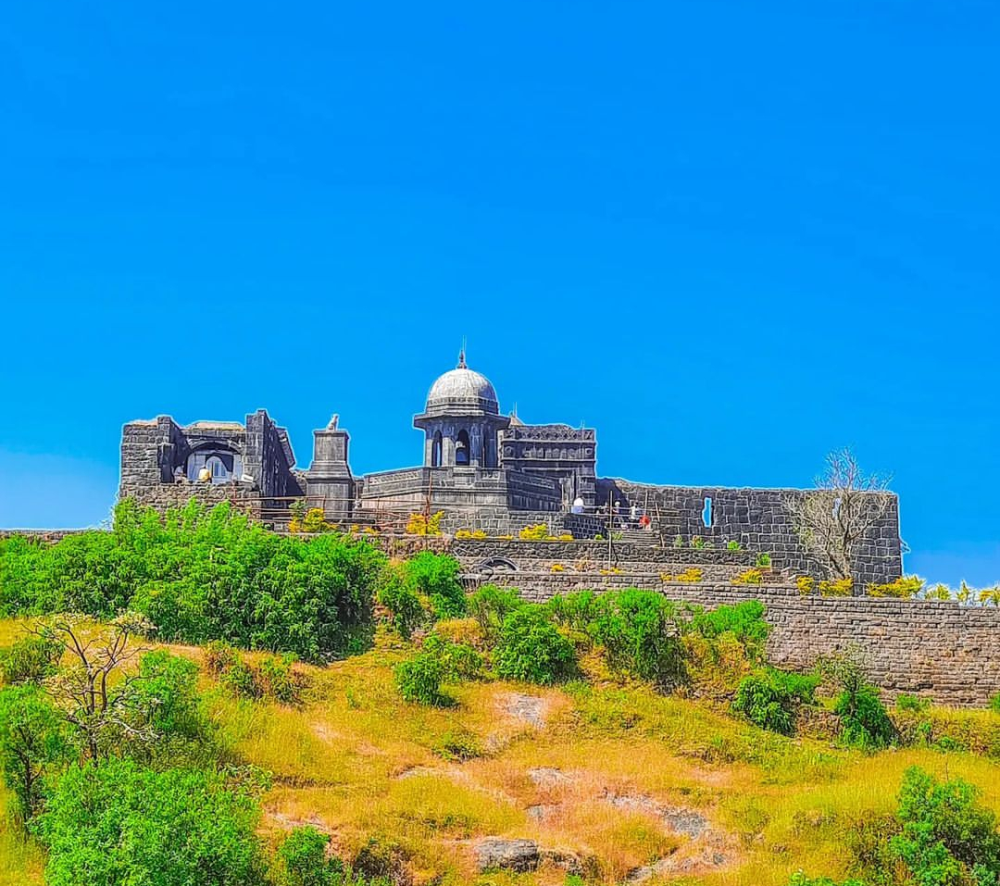
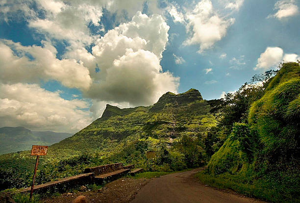

रायगड किल्ला
Location : Click Here For Google Map
- माहिती
- रायगड हा महाराष्ट्र राज्यातील एक ऐतिहासिक किल्ला आहे. हा किल्ला छत्रपती शिवाजी महाराज यांच्या संदर्भात प्रसिद्ध आहे, जे मराठा साम्राज्याचे संस्थापक होते. हा किल्ला त्यांचा राजधानी ठरला होता आणि तो एक डोंगराच्या शिखरावर स्थित असल्यामुळे तेथून आसपासच्या निसर्गदृष्याचे आश्चर्यकारक दृश्य दिसते.
रायगड किल्ला मराठी इतिहास आणि संस्कृतीतील एक महत्त्वाचा भाग आहे. सुरुवातीला या किल्ल्याला "रायरी" असे नाव होते, परंतु छत्रपती शिवाजी महाराजांनी त्याचे नामकरण रायगड असे केले. हा किल्ला पश्चिम घाटातील एक महत्त्वाच्या ठिकाणी आहे आणि मराठा साम्राज्याच्या लढाईत त्याचे मोठे महत्त्व होते.
त्याच्या ऐतिहासिक महत्त्वाशिवाय, रायगड किल्ला त्याच्या समृद्ध वारश, भव्य वास्तुकला आणि निसर्ग सौंदर्यासाठी एक लोकप्रिय पर्यटन स्थळ आहे. किल्ल्यात अनेक महत्त्वाचे ठिकाणे आहेत, जसे की मुख्य प्रवेशद्वार (महाद्वार), राजवाडा आणि छत्रपती शिवाजी महाराजांची शिल्प. किल्ल्यापर्यंत पोहोचण्यासाठी साधारणतः 1,700 पायऱ्या चढता येतात किंवा केबल कारचा वापर केला जातो.
रायगड किल्ला मराठी संस्कृतीत अत्यंत आदर आणि गर्वाचे प्रतीक आहे आणि तो छत्रपती शिवाजी महाराज यांच्या वीरता आणि दृष्टिकोनाचा प्रतीक आहे.
Explore the historical beauty




